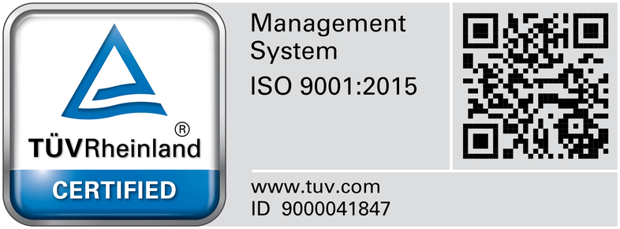
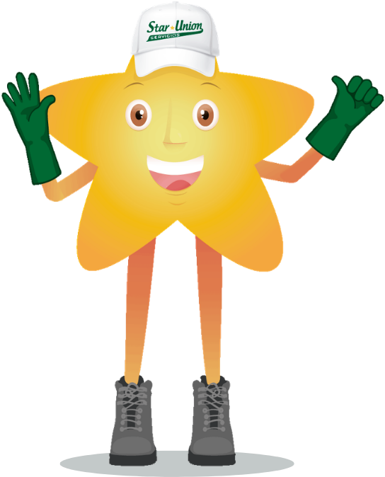
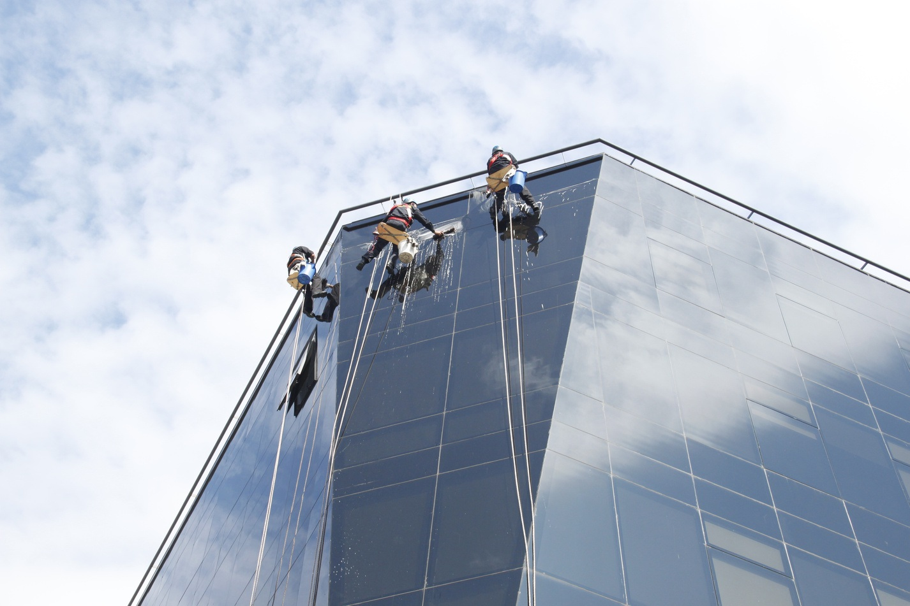
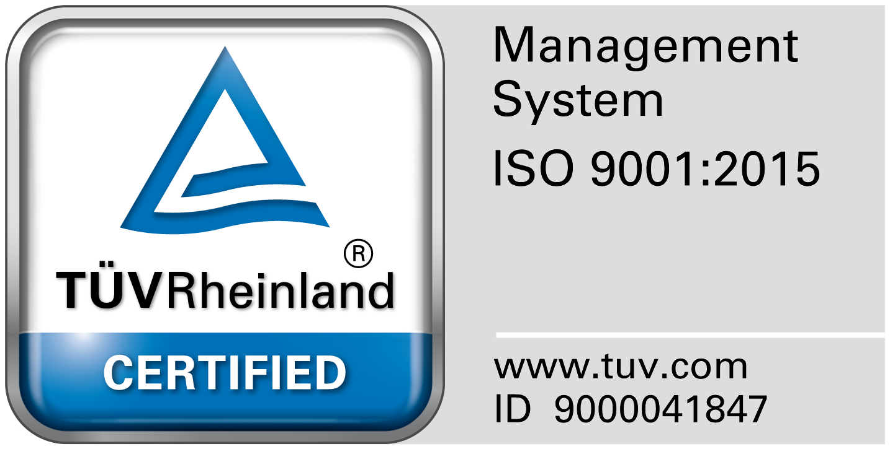
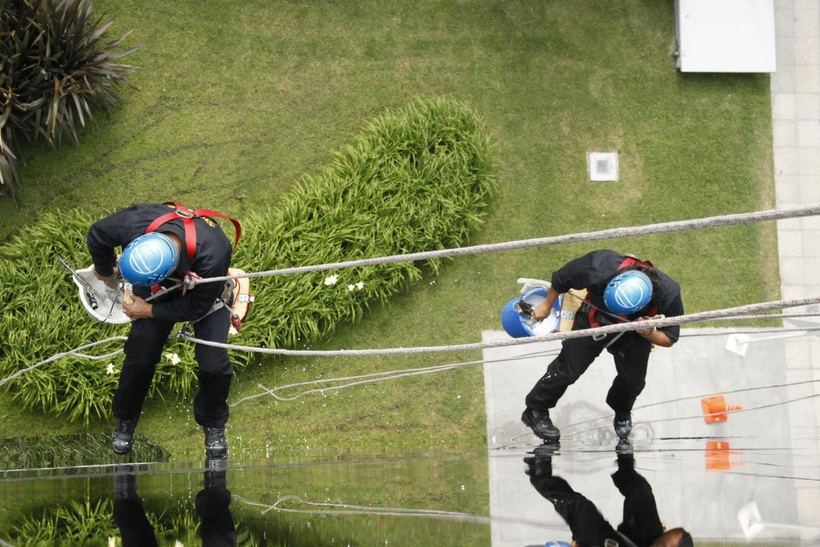
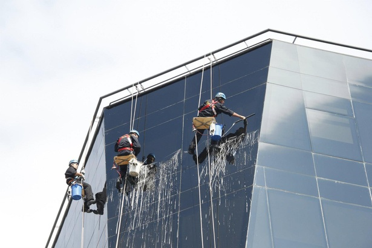
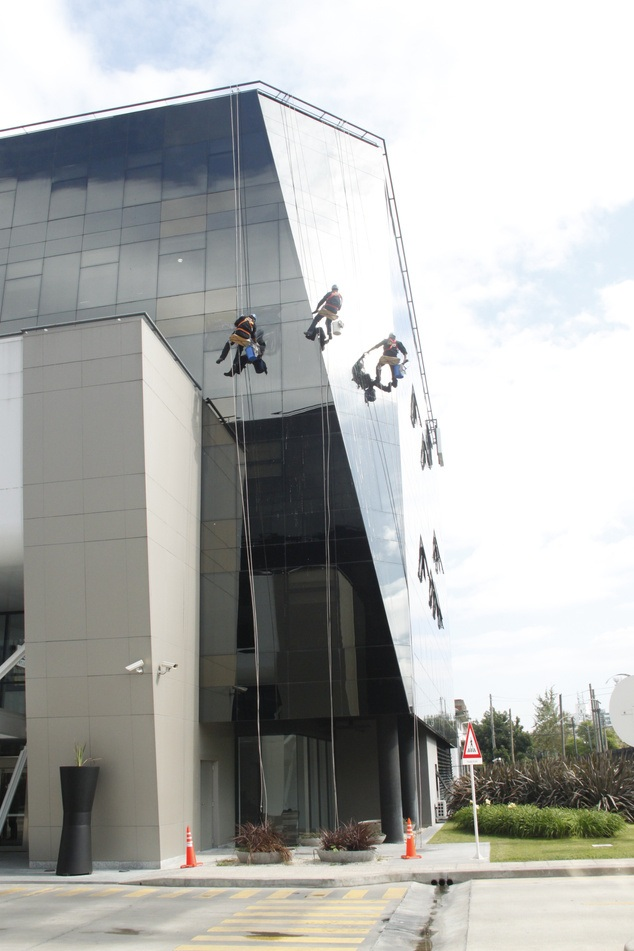

Frentes Integrales
Curtain Wall y Piel de Vidrio
Descenso controlado por cuerdas sobre paños espejados y carpinterías de aluminio sin dañar burletes ni recubrimientos.
Desplegamos cuadrillas 100% propias de Oficiales de Altura entrenados bajo estándares de la ARAA (Australian Rope Access Association) para edificios corporativos, torres de consorcios, clínicas, plantas industriales y finales de obra. Silletas, balancines, hidroelevadores, ósmosis inversa y sellado hermético de cristales.



Operación Propia Auditada · Normas ARAA
Arneses integrales homologados, doble cuerda (trabajo y vida), descensores autobloqueantes y supervisión HSE en sitio.

A diferencia de empresas que tercerizan los trabajos de riesgo en monotributistas, todo nuestro plantel de altura pertenece a la nómina directa de Star Union S.R.L. con examen psicofísico de altura vigente, ART con Cláusula de No Repetición y equipos propios homologados:
Descenso controlado por cuerdas sobre paños espejados y carpinterías de aluminio sin dañar burletes ni recubrimientos.

Silletas ergonómicas con cuerda de trabajo y cuerda de vida independiente, salvacabo, casco con barbijo y ventosas de sujeción.

Despliegue simultáneo de múltiples líneas de descenso para completar grandes torres corporativas en ventanas de fin de semana.

Sellado hermético contra filtraciones, hidrolavado de frentes, limpieza de lucernarios, alucobond y estructuras industriales.
Nuestro Departamento de Operaciones junto al Servicio de Higiene y Seguridad en el Trabajo (Lic. M.P. CPQ 6999) evalúa los puntos de anclaje y la morfología del edificio antes de cotizar, seleccionando el método óptimo:
Descenso vertical mediante arneses integrales, bloqueadores y cabos de vida certificados para torres de oficinas, hoteles y consorcios.
Plataformas suspendidas, brazos articulados, tijeras elevadoras e hidrogrúas para frentes fabriles, cabriadas, techos y naves logísticas.
Limpieza de paños vidriados hasta 18 metros desde nivel de piso mediante pértigas de fibra de carbono con inyección de agua desmineralizada que seca sin dejar vetas ni residuos minerales.
Reposición de silicona estructural en piel de vidrio, remoción de restos de cemento/pintura post-obra y despolvoreo aéreo de conductos y luminarias industriales.
Antes de que el primer operario ingrese a la terraza o fachada de tu edificio, presentamos ante la Administración o Gerencia de Planta el legajo documental completo:
Un supervisor especialista en altura visitará sin cargo tus instalaciones para verificar anclajes, definir la dotación necesaria y entregar una cotización formal respaldada por nuestra certificación ISO 9001:2015.